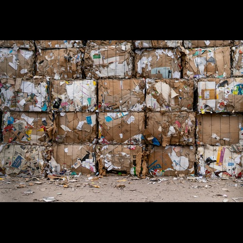
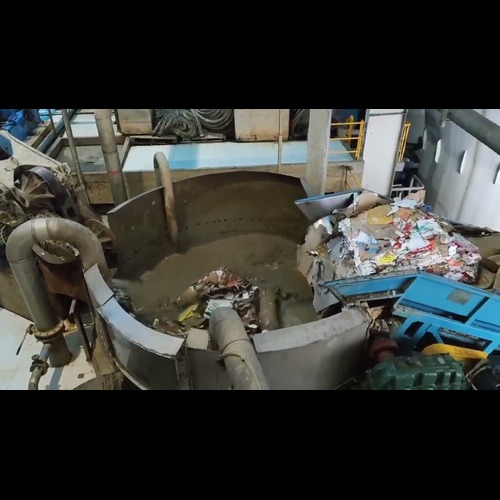
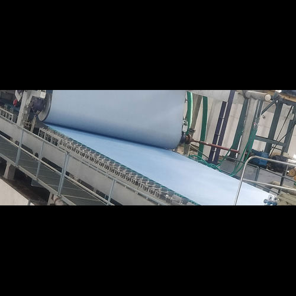
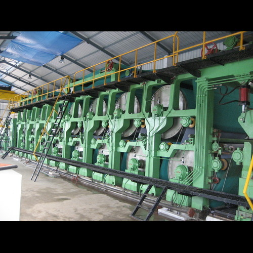
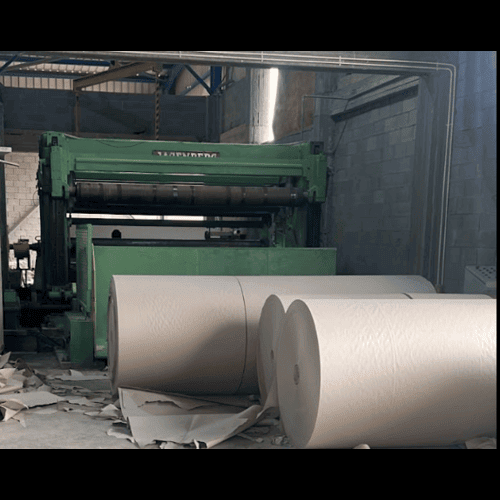

نحن نسعى لإعادة تدوير الورق بشكل فعال ومسؤول، مما يقلل من النفايات ويحمي بيئتنا.
خطوات الإنتاج

الخطوة 1 جمع نفايات الورق
نقوم بجمع نفايات الورق مثل هذه لاستخدامها في عملية إعادة التدوير.

الخطوة 2 تحضير الورق
يشمل التحضير عدة خطوات:
1. استخدام جهاز الطاحن لتحويل الورق الملوث إلى لب.
2. استخدام جهاز التنظيف عالي الكثافة لإزالة المعادن.
3. الفحص لإزالة الشوائب غير السليلوزية.
4. استخدام جهاز التنظيف منخفض الكثافة لإزالة الرمل.
5. الطحن لفرز الألياف.
6. جهاز سميك لزيادة كثافة اللب.

الخطوة 3 الأسلاك
يتم تغذية اللب المعالج إلى آلة الورق حيث يتم نشره على شبكة سلكية لتشكيل طبقة رقيقة. يتم تصريف الماء، تاركًا حصيرة من الألياف.

الخطوة 4 التجفيف
ثم يتم تجفيف الورقة المضغوطة باستخدام أسطوانات مسخنة أو أنظمة تجفيف بالهواء لإزالة الرطوبة المتبقية.

الخطوة 5 التقطيع والتشطيب
هذه هي الخطوة الأخيرة لتخصيص الحجم حسب احتياجات العملاء.